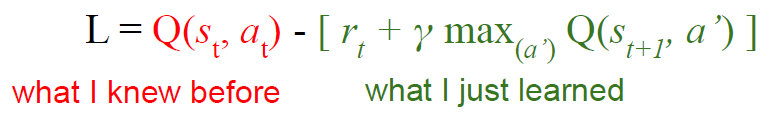
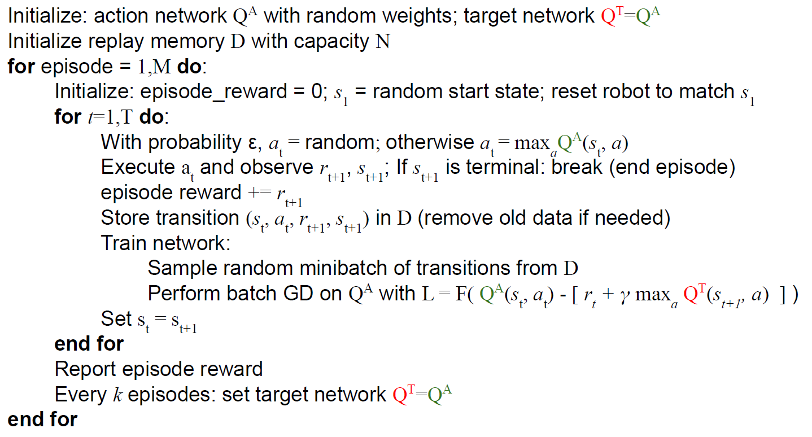

Robot Learning
In this project, I simulated a torque-controlled multi-linked arm in Python. I tried several approaches to control the end effector position using both traditional and reinforcement learning methods. Pytorch is used for training Neural Network.
Part 1: Using Model Predictive Controller (MPC)
The true forward dynamic model is used in this case.
Part 2: Using the same MPC with a trained forward dynamic model
A Neural Network of 4 fully connected layers is used to predict the next state from current state and torque inputs. Data for training the network is collected by some random inputs before training begins.
Part 3: Using Deep Q-Network
A Neural Network can be used to compute a value function that satisfies its corresponding Bellman equations. Thus, the Loss should be set as follow:
Experience replay is used to reuse the previous episodes to accelerate the training process. In order to stabilize the network in training, two networks are used. The Target network is updated less frequently. The code is like this:
This method doesn't require training data prepared before the training, it explores and creates training date for itself.
Part 4: Using Actor-Critic Methods
This method allowed us to train a Policy network (actor) and a Q-value network (critic) simultaneously. Details of math are skip here. I used Proximal Policy Optimization in this case with the help of stable_baseline3.